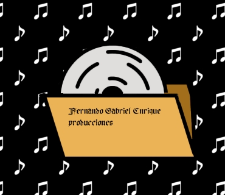

menu
Productor independiente habilitado por AADI y CAPIF ofrece un paquete 360° con todo y web

Si buscas un paquete de lanzamiento completo tengo todo lo que necesitas
Tengo todo lo que buscas:
- Producción, mezcla y masterización de audio
- Edición y subida de videos a YouTube
- Una página web propia, con dominio profesional propio, hosting y programada en HTML y CSS para mayor velocidad.
- Subida de tus temas a Spotify
¿Para quién es?
- Artistas independientes
- Cantantes y bandas en etapa inicial o de crecimiento
- Proyectos que quieren profesionalizar su sonido y su imagen
Si necesitás alguien que se haga cargo del proyecto completo, este servicio es para vos.
Ve la lista de precios en la sección de servicios o pinchando en este enlace servicios
Pide más información aquí
Portafolio en construcción:
Actualmente estoy ampliando el portafolio con nuevos lanzamientos y producciones en curso.
Cada proyecto publicado corresponde a trabajos reales desarrollados junto a los artistas.
Solo servicios en Posadas, Misiones y alrededores CP: 3304, provincia de Misiones, Argentina.
Acompañamiento al artista
El trabajo no se limita a grabar un tema. Acompaño al artista durante todo el proceso:
desde la idea inicial, la producción musical y la grabación, hasta la entrega final y el lanzamiento en plataformas digitales.
El objetivo es que el artista no esté solo en el proceso y pueda concentrarse en lo creativo, mientras yo me ocupo de la parte técnica y estratégica. El proceso incluye:
- Planificación del proyecto
- Producción y edición de audio
- Mezcla y masterización
- Preparación del material para las plataformas
- Subida y verificación en Spotify y demás servicios
- Asesoramiento básico de lanzamiento